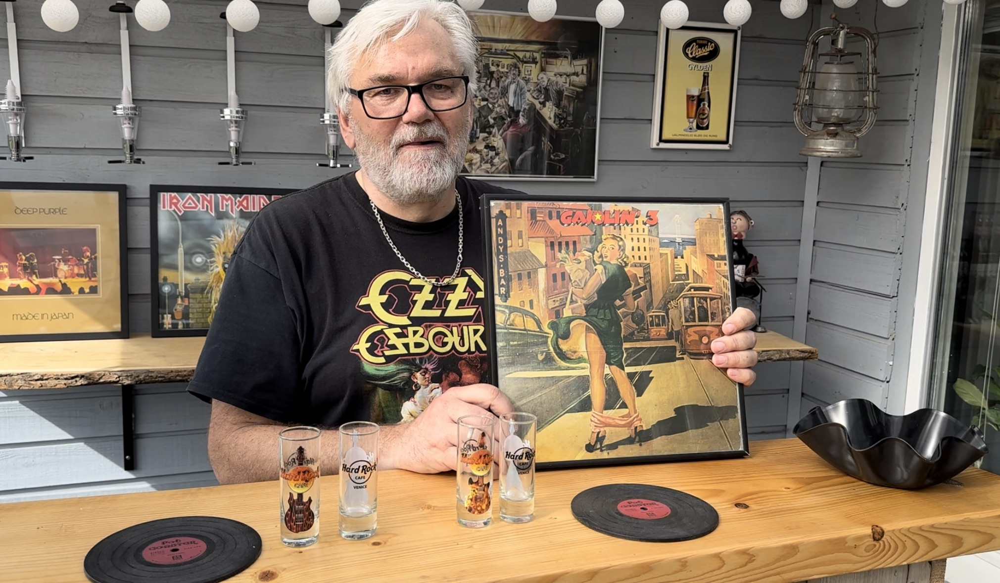

Mød Steen som er passioneret omkring vinyller. Hans passion begyndte allerede, da han var helt lille dreng. Han købte sin første lp som 13-årige, og han er ikke stoppet siden. Hans samling har været helt oppe på 1000 stk, men som mange andre solgte han dem, da der kom mere moderne tider. Han har nu startet sin samling op igen og er oppe på ca. 800 stk.
